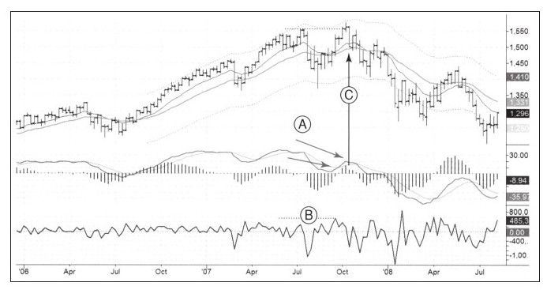

再看看我所使用的几个指标在2007年市场见顶时的表现。如图9-4所示，2007年6月市场上涨到高点A，然后快速下跌，股价跌到价值区之下并在通道下轨止跌。创下近几年来的最大跌幅，表明熊市力量在增强。请注意这些指标在形成底部B时的运动过程。

2007年8月份的MACD柱下跌的深度大于3月份下跌的深度，强力指标也是如此。这样的熊市指标相互验证，给越来越强的熊市判断提供了佐证。
2007年10月股票市场继续上涨并达到历史新高，但是这些关键指标却没有突破6月份的高点，发出了明显的顶背离信号。这些背离同时发生在MACD柱、MACD线上，虽然MACD线顶背离不常发生，但它能给出更加强烈的交易信号。
在10月份唯一没有背离的指标是强力指标。两个指标显示卖出信号，另一个指标基本处于中立状态，这足以让人看空市场，因为在市场中你不能指望所有指标都看起来非常好。
2007年10月份，标普500指数周线图运行到上轨线，此处表明市场被高估，交易大众开始看多。业余交易者喜欢向上突破并希望它们不断发生，但职业交易者知道大多数突破都会失败，其交易方向也与多数业余交易者相反。
我喜欢在前期高点处画水平线，当价格突破前期高点并且关键指标出现潜在的顶背离时，我就在那条线上设置自动报警器，只要价格低于那条线，我就认为它是假突破并开始做空，并把止损设在刚创出的高点附近。